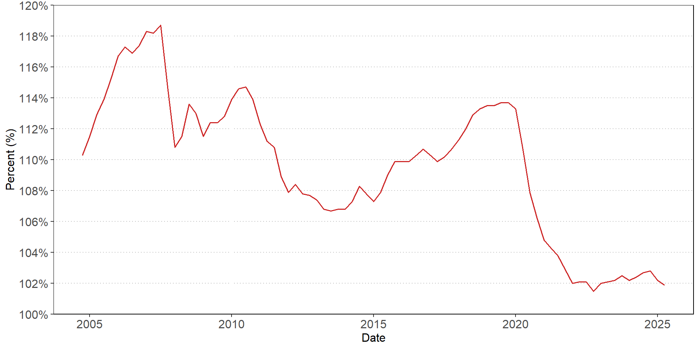
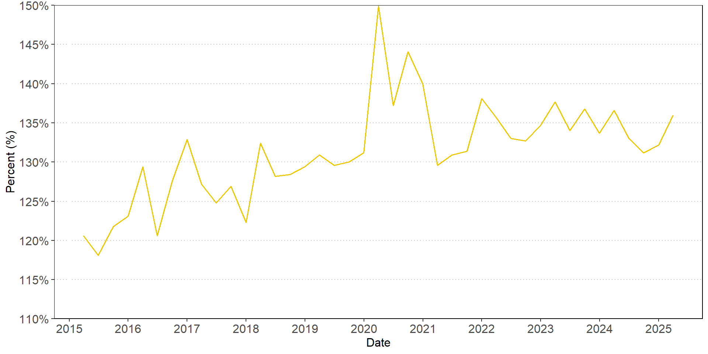
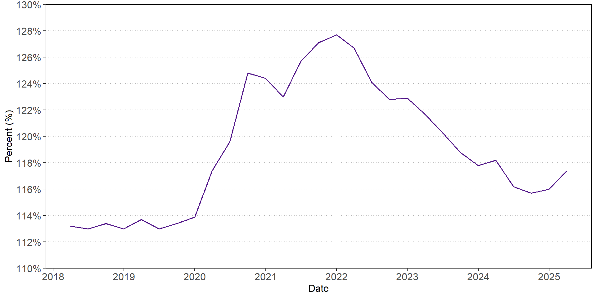
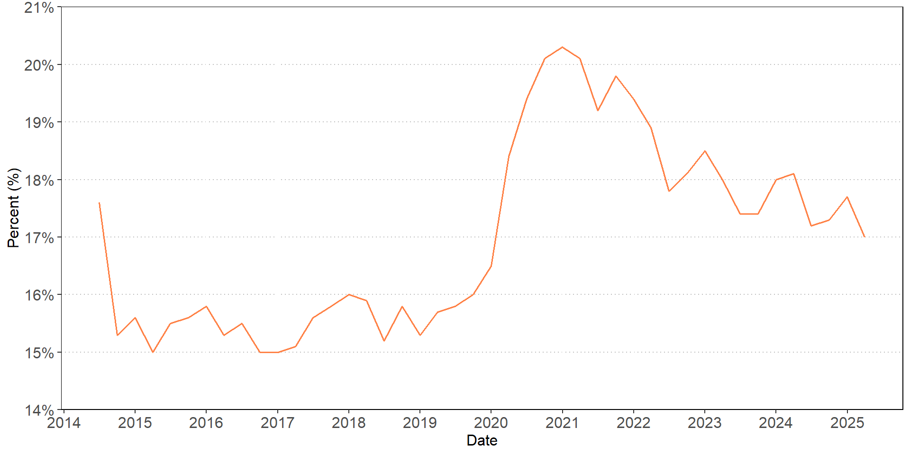

Liquidity Risk
FIN 331 Lecture 5
Andrew Ainsworth
University of Wollongong
Lecture outline
- What is liquidity risk?
- Liquidity risk can arise on both the asset and liability side of the balance sheet
- Banks need to access funds to plug liquidity shortfall
- How can banks measure liquidity risk
- Finance gap
- Balance sheet ratios
- Liquidity index
- Liquidity coverage ratio
- Net stable funding ratio
- Bank runs and solvency problems
What is liquidity risk?
- Liquidity reflects the ability to convert a security into cash in a short amount of time without having an adverse impact on the price of the security
- Banks face liquidity risk from both the asset and liability sides of the balance sheet
- Liability-side liquidity risk: A significant unexpected increase in depositors demanding immediate access to cash can cause banks to have to liquidate assets to fund these withdrawals
- Asset-side liquidity risk: If borrowers with access to credit lines and loan commitments unexpectedly draw down on these funds
- It is normal for banks to face liquidity risk
- Banks are able to predict withdrawals based on past behaviour and seasonal factors
- In extreme cases liquidity risk issues can lead to bank failure
What is liquidity risk?
- Cash is the most liquid asset but it does not earn any interest
- In general, there is an inverse relationship between the liquidity of an asset and its return
- Banks try to minimize their cash holdings because they do not earn interest
- Banks invest in longer maturity, less liquid assets to earn interest revenue
- Liquid assets can be sold and converted into cash with relative ease and speed
- Less liquid assets can be difficult to sell and if the seller demands immediacy when selling, they will often have to accept a much lower price for the asset (fire-sale price)
Liability-side liquidity risk
- A large proportion of the liabilities on a bank’s balance sheet are deposits
- A substantial amount of these deposits are at-call meaning that they can be immediately withdrawn in cash
- However, only a small proportion of these deposits will be withdrawn on any given day
- In this situation, deposits are a stable source of funds
- Any withdrawals can also be offset with new inflows of deposits
- \(\text{Net deposit drain = Deposit outflows - deposit inflows}\)
- The inflow and outflow of deposits for a given bank is predictable on a “normal” day
- The bank has two source of funds if there is an unexpected increase in outflows of deposits (positive net deposit drain)
- Borrow additional funds (purchased liquidity management)
- Sell assets (stored liquidity management)
Purchased liquidity management
- Banks can purchase liquidity in short-term money markets
- The bank could issue fixed-maturity wholesale certificates of deposit
- The bank is paying market rates for these funds, which are higher than the rate charged on deposits
- This can be a deterrent to purchased liquidity management
- A benefit of purchased liquidity management is that the asset side of the balance sheet is not impacted
- The adjustment to the liquidity event occurs on the liability side of the balance sheet
Stored liquidity management
- Banks can sell some of the assets on its balance sheet to fund the net deposit drain
- Utilizing stored liquidity
- Banks can use cash reserves to meet the net deposit drain
- Both sides of the balance sheet contract when using stored liquidity management
- Stored liquidity management is also costly as banks need to hold cash, which earns a low, or zero, interest rate
- This creates an opportunity cost as the funds could have been invested in higher yielding assets than cash or lent out to borrowers
- Stored liquidity management and purchased liquidity management are not mutually exclusive and banks can use both approaches simultaneously
Asset-side liquidity risk
- Banks can provide a credit line or loan commitment to a borrower that allows them to borrow funds over a commitment period at a time of their choosing
- The borrower chooses the amount and timing that the funds are borrowed
- This can lead to unexpected liquidity demands from borrowers and give rise to liquidity risk
- Banks face asset-side liquidity risk from their investment portfolio
- If liquidity dries up in the markets where their investment assets trade then the value of assets can decline if banks need to sell assets quickly (fire-sale prices)
- This liquidity risk can be managed with either purchased liquidity management or stored liquidity management
The financing gap
- The financing gap measures the difference between the value of loans and deposits
\[\text{Financing gap = Average loans - Average deposits}\]
- Banks must use stored liquidity management or purchased liquidity management if the financing gap is positive
\[\text{Financing gap} = \text{Borrowed funds - Liquid assets}\]
- Banks will have higher borrowing if they have a larger financing gap and have fewer liquid assets to utilize
- Higher borrowing can expose the bank to liquidity risk as it is relying on market interest rates and the supply of capital from lenders in these markets
- Lenders in the money market could become concerned about the bank’s creditworthiness and charge a credit risk premium or undertake credit rationing
- This can lead to insolvency if the financing requirement cannot be met with liquid assets or borrowing
- An increasing financing gap can indicate future liquidity problems
Peer goup ratio comparisons
- Liquidity risk can be identified through ratios
- Loans to deposits ratio
- This can indicate the reliance of the bank on purchased funds from the money market to fund loans
- A high value could indicate that liquidity problems may arise if the bank is at or near its borrowing limit
- Loans to assets ratio
- This highlights a need for liquidity if the ratio is high as loans are longer-term and illiquid
- Unused commitments (or lines of credit) to assets ratio
- This ratio can pick up asset-side liquidity risk if borrowers draw down on these commitments
Net loans to deposits

Liquidity index
- This index measures potential losses a bank could face if they were forced to sell assets at fire-sale prices rather than fair value prices
\[I = \sum_{i=1}^N \left[ (w_i) \left( \frac{P_i}{P_i^*} \right) \right]\]
- \(w_i\) is the percent allocation to each asset
- \(\sum_{i=1}^N w_i = 1\)
- \(0 \le I \le 1\)
- \(P_i\) are the fire-sale asset prices
- \(P_i^*\) are the fair market prices
- A larger difference between immediate fire-sale asset prices \((P_i)\) and fair market prices \((P_i^*)\) indicates that their portfolio is less liquid
- The liquidity index can be compared to peers
Liquidity coverage ratio
- The liquidity coverage ratio (LCR) measures the banks level of high-quality liquid assets (HQLA) that can be converted into cash to meet liquidity needs over a 30-day horizon
- The measure incorporates a scenario of both institution-specific and systemic shocks
- Does the bank have enough liquid assets to survive a 30-day liquidity crisis?
- The LCR must remain above 100%
\[LCR = \frac{\text{Stock of HQLA}}{\text{Total net cash outflows over the next 30 days}}\]
- HQLA are defined as follows:
- Liquid assets must remain liquid in times of stress and be unencumbered
- Liquid assets are divided into level 1 and level 2
- Traded in large, deep and active repo or cash markets characterized by a low level of concentration
- Have a proven record as a reliable source of liquidity even during stressed market conditions
Liquidity coverage ratio
- Level 1 HQLA
- No cap on amount
- Includes, for example, cash, central bank reserves, certain sovereign bonds and claims on other supranational agencies (e.g. International Monetary Fund)
- Level 2 HQLA
- Level 2 amount is capped at 40%
- Level 2A assets
- Includes certain claims on central banks, sovereigns, corporate debt issued by non-financial issuers rated above AA-
- A minimum 15% haircut applied to the value of level 2A assets
- Level 2B assets
- Includes residential mortgage backed securities rated above AA, corporate debt rated above BBB-, equity shares from non-financial companies
- Level 2B assets limited to 15% of HQLA
- A minimum 25% haircut applied to the value of residential mortgage-backed securities
- A minimum 50% haircut applied to the value of corporate bonds and equities
Liquidity coverage ratio
- Total net cash outflows is the denominator of the LCR
- Total net cash outflows take into account assumptions on the magnitude of the draw-down
- For example, 5% of stable deposits are assumed to be withdrawn
\[\text{Total net cash outflows over the next 30 days} =\\
\text{Total expected cash outflows} -\\
\text{Min(Total expected cash inflows, 75% of total expected cash outflows)}\]
- Not all ADIs in Australia are required to report the LCR
- APRA decides which banks need to meet the LCR requirement
- There are currently 12 banks that need to meet the LCR
Net stable funding ratio
- The net stable funding ratio (NSFR) examines liquidity over the entire balance sheet
- The NSFR encourages banks to to use longer-term stable sources of funding
\[ NSFR = \frac{\text{Available amount of stable funding}}{\text{Required amount of stable funding}}\]
- Available stable funding (ASF) includes
- Bank capital
- Preferred stock with a maturity > 1 year
- Liabilities with maturities > 1 year
- The portion of deposits expected to remain during a period of idiosyncratic stress
- These sources of funds are given a haircut based on pre-determined values
Net stable funding ratio
- The required stable funding (RSF) amount is based on assumptions regarding the liquidity risk characteristics of assets, off-balance-sheet exposures, and other selected activities
- The RSF takes account of assets and the amount of stable funding needed for that asset based on a predetermined percentage (RSF factor)
- The asset definitions from the LCR are used
- For example, corporate debt securities with a credit rating of between A+ and BBB- require a 50% stable funding rate
- The RSF factors are applied to each asset and represent the regulator’s view on how much of the asset should be supported with stable funding
- The RSF factors are intended to approximate the amount of a particular asset that could not be sold or used as collateral in a secured borrowing during a severe liquidity event lasting one year
Minimum liquidity holding
- APRA uses a minimum liquidity holdings (MLH) measure to monitor liquidity for smaller ADIs
- The MLH is defined in Prudential Standard APS 210 Liquidity
- An MLH ADI must maintain a minimum holding of 9% of its liabilities in specified liquid asset
- Liquid assets include
- Notes, coins and settlement funds
- Australian government securities
- Debt securities issued by supranationals and foreign governments
- Bank bills, certificates of deposits (CDs) and debt securities issued by ADIs
- Deposits that are at call or can be converted into cash within two business days
Average LCR - Selected ADIs

Average NSFR - Selected ADIs

Average MLH - Selected ADIs

Unexpected deposit drains and bank runs
- Banks can experience significant liquidity problems if there are large, unexpected deposit drains
- Depositors might be concerned about the bank’s solvency
- The failure of a related bank can lead to contagion as depositors become concerned about the solvency of other banks
- Demand deposits are paid on a first-come, first-served basis
- A depositor will either get paid in full or receive nothing
- It is rational for depositors to join the queue and withdraw funds
- As a bank run increases in intensity, more depositors join the withdrawal queue and a liquidity crisis develops
- A bank can initially use stored liquidity or purchased liquidity but these sources will eventually be exhausted
- The cost of purchased funds will increase and counterparties will stop lending to a bank that is experiencing a run
- The bank will need to sell less liquid assets at fire-sale prices
- Ultimately, the liquidity issue becomes a solvency issue
Managing liquidity risk
- Banks can reduce liquidity risk by holding large amounts of cash and liquid assets (e.g. government bonds)
- But they will receive lower yields on these assets
- Less liquid assets provide a higher yield that reflects a higher credit risk premium and a lack of liquidity
- Banks must determine the appropriate mix of lower-yielding, liquid assets versus higher-yielding, less liquid assets
- There is a tradeoff between risk and return for the bank
- Highly liquid assets \(\rightarrow\) low bank profitability but low liquidity risk
- Less liquid assets \(\rightarrow\) high bank profitability but high liquidity risk
- Remember that regulators are monitoring liquidity of assets and liabilities
Managing liquidity risk
- Banks should also manage their liability structure to reduce the need for large amounts of liquid assets to meet liability withdrawals
- Excessive use of purchased funds in the liability structure can result in a liquidity crisis if investors lose confidence in the bank
- Interest charged to the bank on money market borrowing will increase
- The market might refuse to roll over such funds
- There is a trade-off between funding costs and liquidity
- The cheapest liabilities are those with the most liquidity risk
- Demand deposits can be withdrawn immediately but pay a low interest rate
Conclusion
- Liquidity risk can arise from liabilities with depositors withdrawing funds
- Liquidity risk can arise from assets as borrowers draw down on loan commitments or banks investment portfolio is impacted by market movements
- Banks can use stored liquidity or purchased liquidity to manage liquidity shortfalls
- There are a number of liquidity risk measures that banks and regulators use
- Banks need to balance the liquidity of their assets with the liquidity risk of their liabilities
- Bank runs begin as a liquidity problem but can become a solvency problem
- It is rational for depositors to withdraw funds in a bank run
- Next week: Sovereign Risk and Off-Balance Sheet Risk